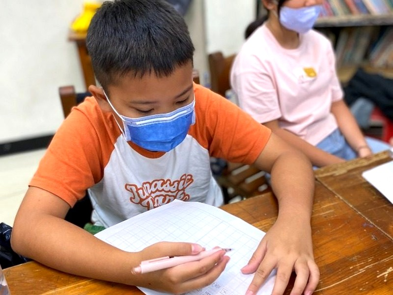

跨越國小到國中的難度斷崖，
掌握 1200 核心單字與五大句型。
「國小英文每次都考 90 幾分，上了國一第一次段考感到挫折？」這不是孩子不認真，而是國中英文在語法嚴謹度、手寫題型與單字量上有了顯著提升。尚學「國中先修英文」在小六升國一的關鍵銜接期，為孩子系統化架設「1200單字字根法」、「五大句型骨幹拆解」與「情境題組理解與規範書寫力」，開學第一次段考胸有成竹！

SINCE 1986

為什麼上了國一，國小英文的優勢瞬間歸零？
國小與國中的英文學習邏輯存在巨大的難度斷層，若沒有提早鋪設橋樑，孩子常面臨嚴重的挫折感：
國小考 90 幾分，國一第一次段考直接不及格？
國小偏向日常口語與情境體驗，國中則著重嚴謹文法、動詞三態與倍數擴充的單字量，需要提早適應。
1200 單字字根法，提前倍數擴充
掌握字首（un-, re-）、字根與字尾轉換，小六暑假迅速建立千字單字庫，閱讀課文游刃有餘。
時態與句型混在一起，造句與克漏字全錯？
只背零散規則卻看不清句子骨幹，主詞動詞稍有變化就陷入干擾陷阱。
五大句型透視拆解，看穿結構
像 X 光透視一樣圈出主詞、動詞時態與受詞關係，句型結構清晰通透，段考翻譯題輕鬆拿分。
選擇題都會，一遇到手寫改寫與翻譯就頻頻失分？
國小多以看圖圈選為主，國中段考開始要求手寫單字拼寫、依提示改寫句子與整句翻譯，漏了大小寫、單複數 s 或標點符號就扣分。
落實手寫規範，情境題組精準理解
引導孩子親自動手書寫，扎實鍛鍊大小寫、單複數與標點習慣，並學會看懂情境對話與圖表脈絡，考卷細節分全拿！
國小英語 vs 國中英語：難度斷崖深度解析
把國小到國中的難度斷層鋪平為踏實的階梯，讓孩子走得穩健、滿懷自信：
單字需求量斷崖
約 300 個生活字彙，偏重圖片配對與具象生活名詞，多附提示字。
教育部 1200 核心必背單字，涵蓋抽象與學科概念，要求詞性精準轉換與字根衍生。
文法結構深度斷崖
簡單現在式、日常打招呼對話，不深究句型骨幹與時態變化。
切入五大基本句型、動詞三態變化、過去進行式與未來式。單複數加 s 與時態呼應極其精細！
題型轉變與書寫嚴謹度斷崖
以聽力、看圖選擇為主，鮮少考手寫拼寫，大小寫與標點多不苛扣。
段考納入手寫單字拼寫、依提示改寫句子與整句翻譯。字首大小寫、名詞單複數加 s 與標點符號缺一不可，極度考驗書寫細節！
四大銜接護城河：第一次段考胸有成竹
跳脫零碎的片面記憶，尚學引導孩子回歸英語結構本質：建立字根脈絡力、句型剖析力、情境題組理解力與正規教材的扎實演練：
1200 核心字根字首記憶法
掌握字首（un-, re-）、字根（port, spect）與詞性轉換，背一個字等於記下四個衍生字！
五大句型骨幹透視拆解
圈出「主詞在哪？」「動詞是什麼時態？」「受詞是名詞還是動名詞？」，再長句子也能一眼看穿。
情境題組理解與規範書寫訓練
對接國中真實段考題型，涵蓋生活對話、簡易圖表與句子改寫。引導孩子從前後文理解文意脈絡，並落實手寫標點與大小寫嚴謹度。
堅持採用正規國中教材扎根
不同於簡化難度的過渡講義，尚學直接採用教育部審定之正規國中教材與真實段考題型骨幹。引導孩子提早熟悉真實的課文篇幅、單字密度與語法深度，穩健累積實力。
先修課堂實況：小班制扎實探究與討論
每位孩子在老師引導下，親自動手拆解句子、建立扎實筆記：
預約國中先修學力評估・免費單字與句型診斷
陪伴孩子平穩跨越國中難度斷崖，守護學習信心。歡迎預約尚學國中先修學力評估，讓專業老師為孩子診斷單字量與語法概念，打造最妥善的銜接計畫。
當日到班參觀，免費提供「教育部 1200 單字落點檢測」與「國中五大句型理解力評估乙次」，名額有限敬請提前預約。
關於國中先修英文的常見問題
Q1. 小六升國一的暑假才開始先修，會不會太晚？
小六升國一的暑假是密集銜接期！若從小五、小六平時就進入「進階英語素養」提早打底，單字量與句型習慣會更穩健。若等到暑假才開始，尚學設有密集的先導梯次，依然能在開學前掌握核心！
Q2. 孩子在國小英文成績不錯，真的需要上先修班嗎？
國小考卷往往認得單字、選對圖片就能拿 95 分，但國中段考是考語法邏輯（單複數、第三人稱動詞加 s、過去式三態、時態呼應）。很多孩子國小時沒建立語法意識，國一第一次段考直接掉到 60 分，先修就是為了避免這種挫折！
Q3. 國一開學後，這個課程會如何銜接？
開學後學員將直接銜接至尚學「文法閱讀精進（國中英文）」常態專項班，緊密配合右昌國中、國昌國中、立德國中、後勁國中等學區之段考進度、週考模考與會考素養長文深度培訓，持續保持領先！
Q4. 如果孩子在國小只學過簡單生活會話，升國中先修會不會很吃力？
完全不會！國小偏向口語與生活體驗，國中則著重語法邏輯與書寫規範。尚學國中先修專班正是專為這樣的孩子量身設計，以「1200 核心單字字根拆解」與「五大句型骨幹透視」，手把手帶領孩子建立扎實的文法架構與規範書寫習慣，無痛跨越難度斷崖，開學面對正規課本自然胸有成竹！
Q5. 坊間常見的「升國中銜接教材」和尚學採用的「正規國中教材」有何不同？
一般過渡講義常為了好上手而精簡了語法深度與閱讀篇幅，孩子容易在開學接觸到正式課本時感到落差。尚學堅持在先修階段就採用教育部審定的正規國中教材與真實題型架構，讓孩子循序漸進適應真實的國中深度，開學時自然能平穩融入、信心滿滿！